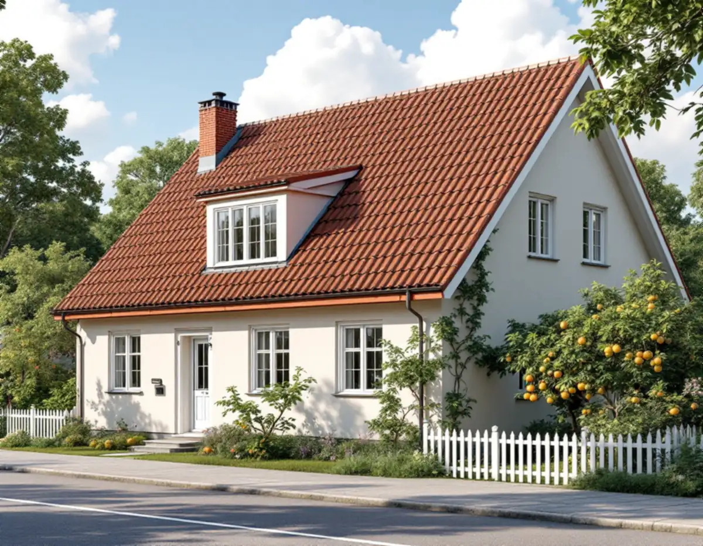
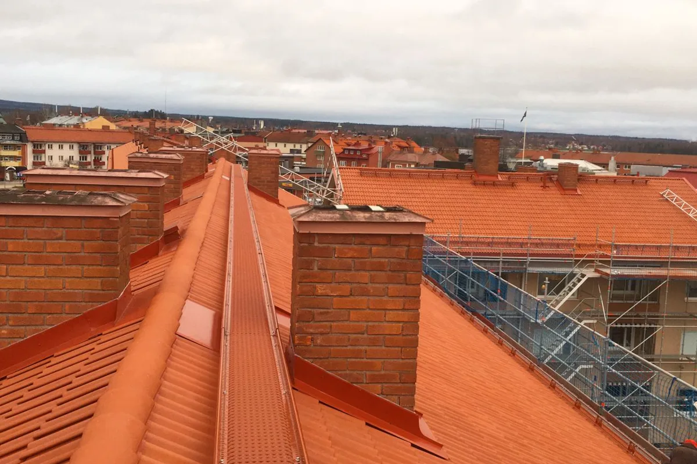
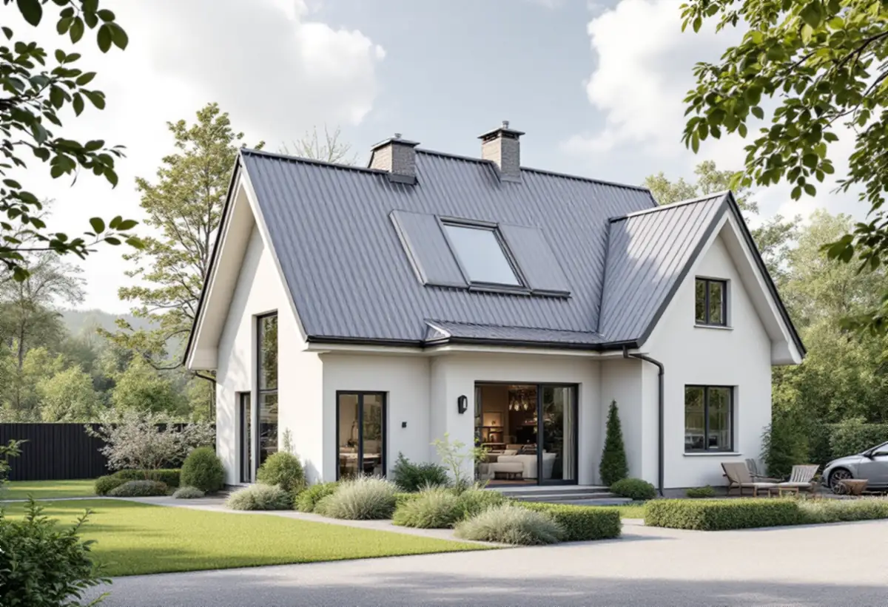

Kartan och planen
Detaljplan, kulturmiljö och klassning kontrolleras för fastigheten.
I Solna hänger lovfrågan vid ett takbyte på tre saker: om huset ligger i ett värdefullt område, vad detaljplanen säger och åt vilket håll takfallet vetter. Ett tyngre takmaterial kan dessutom kräva anmälan. Geal Entreprenad AB byter tak på villor och radhus i Solna och tar fram handlingarna innan materialet beställs.

Solna stad skriver att du kan behöva söka bygglov för byte av taktäckningsmaterial inom detaljplan, i ett kulturhistoriskt värdefullt område eller på en kulturhistoriskt värdefull byggnad. Lov krävs i tre fall: när fasadändringen görs på en särskilt värdefull byggnad eller i ett särskilt värdefullt område, när den gäller solenergi inom detaljplan och inom eller intill riksintresse för totalförsvaret, och när detaljplanen anger att åtgärden kräver lov.
Är inget av det aktuellt behövs inget lov för en fasadändring på ett en- eller tvåbostadshus, om ändringen sker på en fasad eller ett tak som inte vetter mot allmän plats. Staden påpekar också att stora delar av Solna har detaljplan.

Eftersom Solnas villkor för lovfrihet gäller tak som inte vetter mot allmän plats spelar det roll hur huset ligger. Ett sadeltak har ofta ett takfall mot gatan och ett mot trädgården, och ett nytt material på gatusidan bedöms då annorlunda än samma material på gårdssidan.
Det enklaste är oftast att lägga samma material och utförande som förut, vilket Boverket räknar som underhåll och inte som fasadändring. Ska materialet bytas går vi igenom med dig åt vilket håll takfallen vetter och vad som gäller innan något beställs.
Solna stad skriver att du behöver göra en anmälan om byggåtgärd om en fasadändring påverkar byggnadens konstruktion, brandskydd eller tekniska installationer. Ett byte från plåt eller papp till betong- eller lertegel innebär mer vikt på takstolarna, och då kan det behövas en bedömning av konstruktören.
Vid en anmälan som gäller bärande delar räknar staden upp handlingar som utlåtande från konstruktör och intyg om utförd dimensioneringskontroll, och du får inte börja förrän du har fått startbesked. Vi tar upp viktfrågan tidigt, så att den inte dyker upp när materialet redan är beställt.
Bland de sammanhängande kulturhistoriskt värdefulla miljöerna i Solna nämner staden villabebyggelsen i norra Råsunda och Solna kyrkby med radhusbebyggelse. Bland de enskilda byggnadsminnena finns radhusen i kvarteret Fyrväpplingen. Staden har också en karta över kulturhistoriskt klassade byggnader.
Om takrenovering och skyddade miljöer i Solna kan du läsa under takrenovering i Solna. Om tjänsten i stort finns mer under takbyte.
För en fasadändring som kräver lov räknar Solna stad upp bland annat situationsplan, material- och kulörbeskrivning och fotografier av byggnaden där även grannfastigheterna syns. I värdefulla miljöer kan en antikvarisk förundersökning eller ett utlåtande från en sakkunnig inom kulturvärden behövas.
Vi fotograferar taket och grannhusen vid platsbesöket och beskriver det nya materialet och kulören, så att underlaget finns när ansökan ska skrivas.

Detaljplan, kulturmiljö och klassning kontrolleras för fastigheten.
Takfallen, materialet och takstolarna går vi igenom och fotograferar.
Vid tyngre material bedöms om konstruktionen påverkas.
Material, underlag och eventuella förstärkningar för sig.
Handlingarna tas fram när ändringen kräver det.
Nytt tak läggs och vi går igenom resultatet med dig.
Skatteverket räknar byte och reparation av takpannor och hängrännor på ett småhus som rotarbete, när du äger och bor i huset eller har det som fritidshus.
Avdraget är högst 30 procent av arbetskostnaden, högst 50 000 kronor per person och år och högst 75 000 kronor tillsammans med rutavdrag. Material och resor ger inget avdrag. Geal drar avdraget direkt på fakturan.
Takets yta, materialval, underlagets skick, om takstolarna behöver förstärkas och om lov eller anmälan behövs. En överblick finns i vad kostar ett takbyte. Efter ett gratis platsbesök får du ett skriftligt kostnadsförslag.
Byte av tegel-, betong- och plåttak.
Takbyte →Takbyte, takbesiktning och plåtarbeten.
Takläggare i Solna →Råsunda, Stocksundstorp och Råsta.
Takrenovering i Solna →Kulturmiljöerna, kartan och lovet.
Attefallshus i Solna →Ritningar, kontrollplan och slutbesked.
Byggföretag i Solna →Radhusen, föreningen och lovet.
Fasadmålning i Solna →Putsade villor och krav på material.
Fasadrenovering i Solna →Råsunda, bygglovet och handlingarna.
Fönsterbyte i Solna →Fönster från 1950-talet, kitt och fogar.
Fönsterrenovering i Solna →Ta fram och slipa trägolvet under mattan.
Golvslipning i Solna →Plåt i Solnas kulturmiljöer.
Plåtslagare i Solna →Bostadsrätt, stambyte och villor.
Badrumsrenovering i Solna →Bostadsrätter i Råsunda, Hagalund och Huvudsta.
Golvläggare i Solna →Bostadsrätter, fläktar och Råsundas villor.
Köksrenovering i Solna →Villor, radhus och lägenheter i Solna.
Målare i Solna →Väggar, dörrar, balkong och radhus.
Snickare i Solna →Tapet efter husets ålder och underlag.
Tapetsering i Solna →Kulturmiljöerna och lovet.
Tillbyggnad i Solna →Hela lägenheten, elen inräknad.
Totalrenovering i Solna →